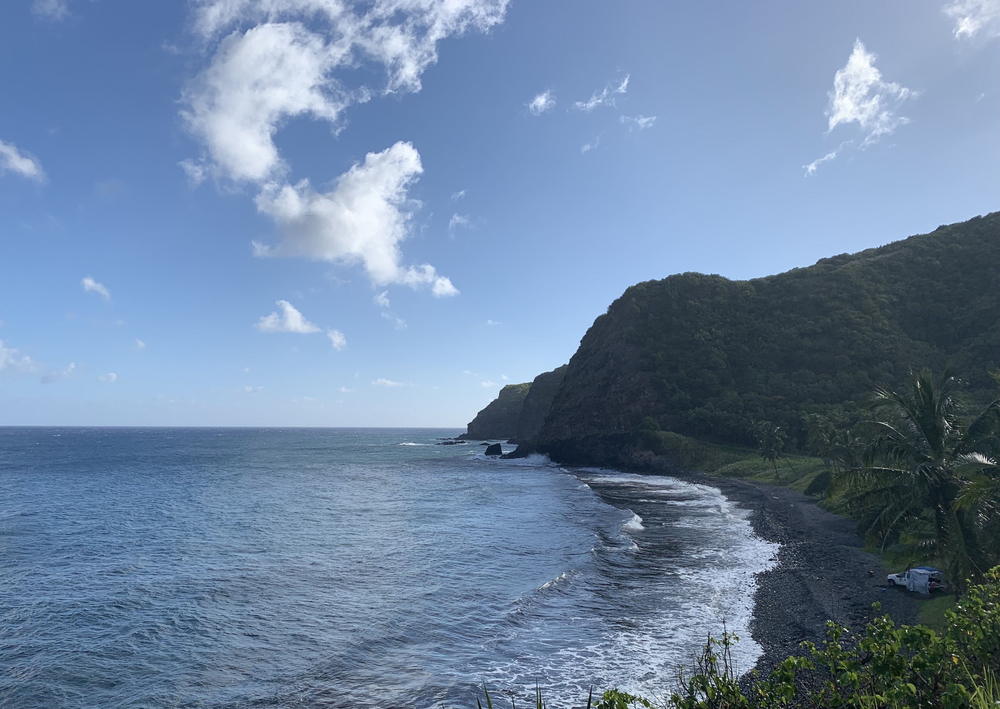
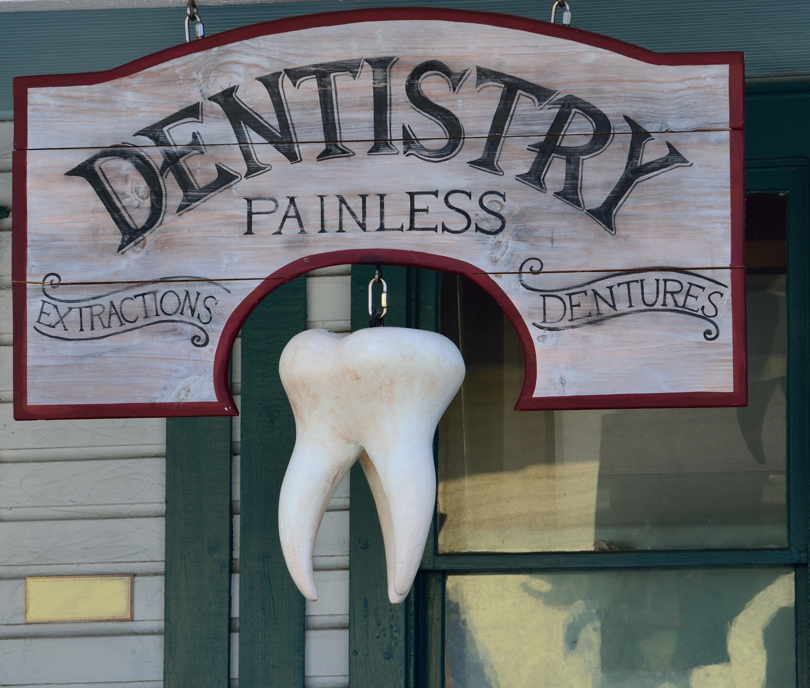
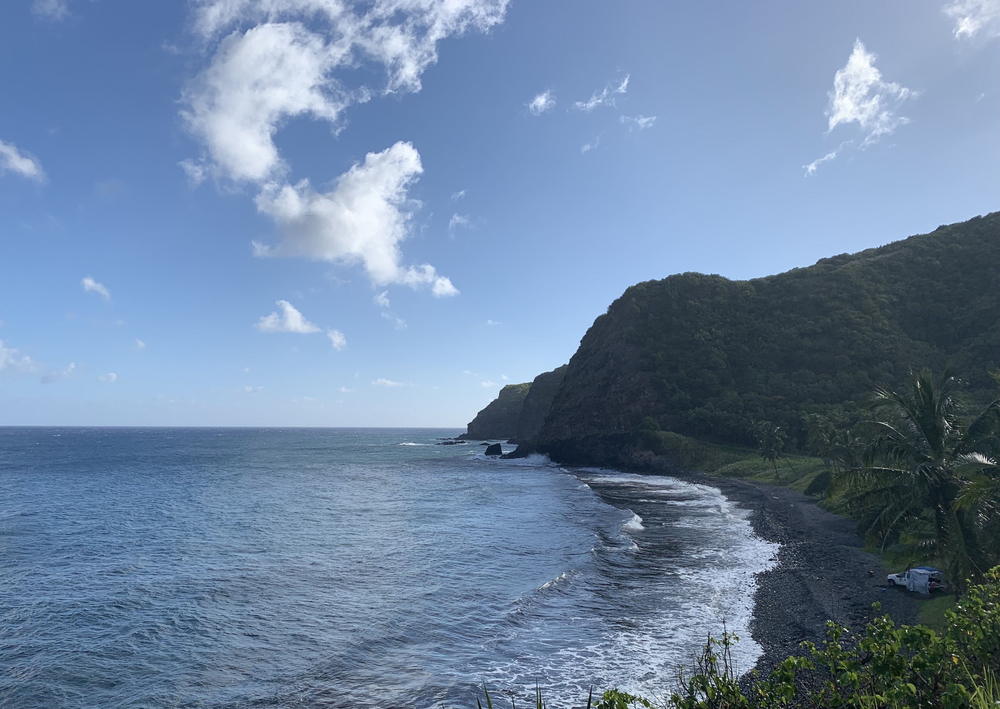
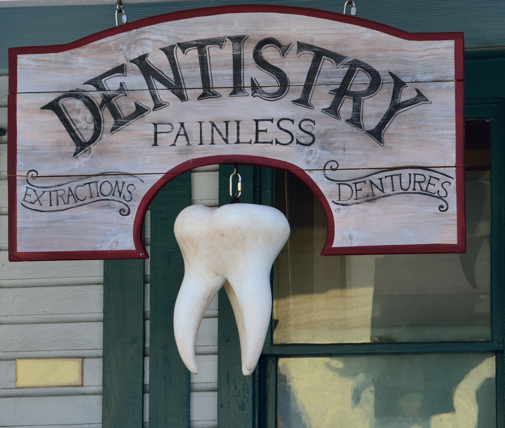

Summer 2021

As of mid-September, this year has been very interesting. For me,
it's been about self-improvement, new experiences, and the loss of
wisdom teeth. Over the summer, I was able to go on vacation
with my family. The picture above is one of the last places we visited
on a hike during the Road to Hana. (The Pipiwai Trail which included
the Seven Pools of O'heo, a waterfall, and a bamboo forest.)
Summer Pictures
 



The leftmost and middle pictures are from my family vacation to Maui.
We got some really good shaved ice at Ululani's and were able to see
a lot of beautiful scenery during our road trip around the island.
After the trip, it was decided that I needed to get my wisdom teeth out, so,
after a summer of eating quality food, I got four teeth extracted.